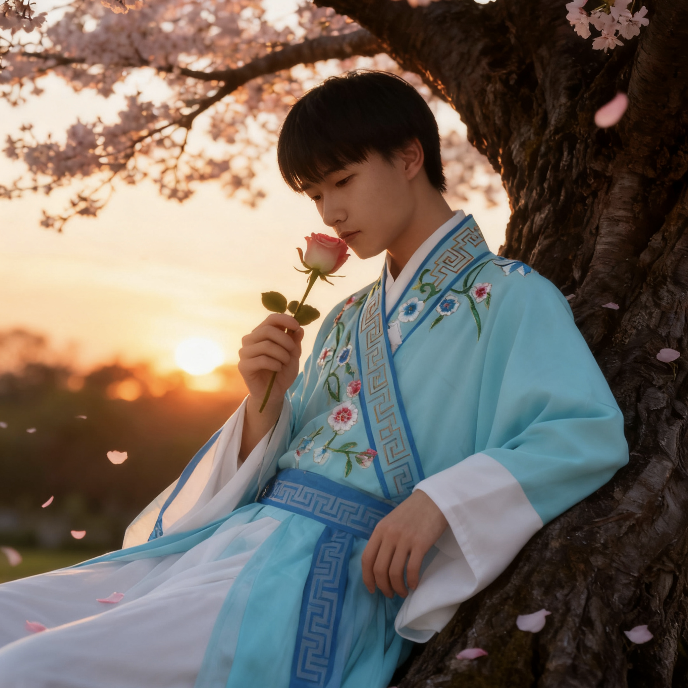
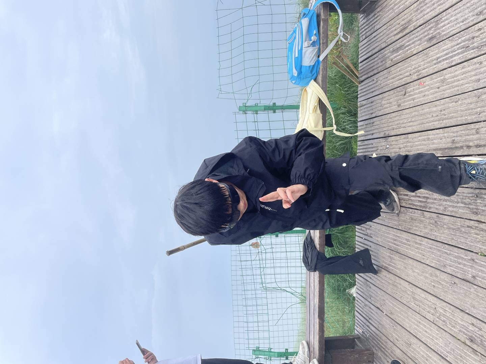
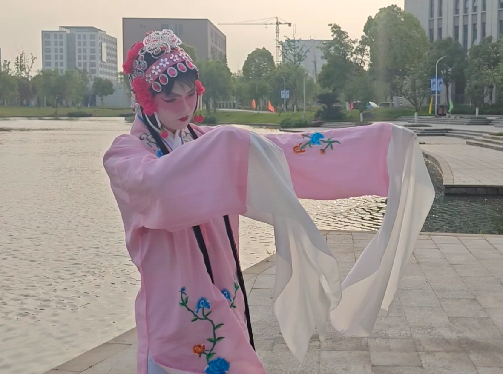

今日签语
山高路远，我们顶峰相见。
白日园林卷
画卷正在展开，体面需要一点时间。
个人江湖名帖 / 晴日园林长卷
生于2003年盛夏，常住杭州。ENFP，自由探索者。爱黄昏散步、朋友聚会、AI与商业，也认真相信：山高路远，我们顶峰相见。
山高路远，我们顶峰相见。

浅青色衣袍、晚霞、樱花和一支玫瑰，把温柔、干净和古风气质都收进了这一帧。
樱花作序，青衣入镜，先把温润和风骨递给来客。
天不热，人也松，适合散步、聚会和认真快乐。
不想只算工时，更想练出把想法落地的本事。
先把人逗笑，再慢慢把真实心事说出来。
沐谦小传
有人初见我在笑，再看两页，才发现笑意底下还有一点认真，以及不愿含糊做人的分寸。
我常住杭州，喜欢这座城市的文艺、松弛和适合散步的分寸感。
小时候爱皮，读书时是气氛组，长大后依旧喜欢热闹，只是学会了把礼貌、边界和靠谱放在前面。有人夸我心态好、脾气好，也有人说我可爱得有点过分。都成立。毕竟我想做的，不只是一个会说笑的人，而是一个能把事接住的人。
注：因表达细腻、气质柔和，我偶尔会被先入为主地误读。后来我学会了：误会不端着，直接说清楚。
六月上线，自带一点晴天滤镜和嘴贫潜质。
负责把场子带热，也顺手练出了会接话、会照顾氛围的本事。
那天很骄傲，原来仪式感和行动力可以同时落地。
不再只盯着“怎么打工多挣点钱”，开始认真想未来怎么自己开路。
研究 AI、学习商业、练表达，也想把可爱和野心都留住。
君子守则
我的君子感，不是端着，而是正直、有礼、讲分寸。温柔可以有，底线也不能少。
人可以有趣，但不能失了正直。很多事我未必喧哗，却会在心里分得很清。
我欣赏真诚、成熟、阳光的人，也希望自己在来往里尽量不虚、不绕。
我不太信“懂的人自然懂”那套。能沟通就沟通，把误会留给电视剧。
我喜欢让人笑出声，也知道什么时候该收，什么时候该稳。
无论友情还是爱情，我都更看重坦诚、陪伴和并肩作战，而不是让人猜来猜去。
可以玩笑，不接受恶意；可以热闹，不接受没分寸的消耗。
晴天行记
如果一个人能被什么细节认出来，那我大概是黄昏、散步、朋友局、可爱壁纸和永远不肯完全无趣的生活。
太阳收一点锋芒，人群开始松动，刚好适合散步、聚会、聊天，也适合让灵感和笑点一起上线。
我更爱朋友堆里的生气勃勃，但也会给自己留一点独处，把脑内小剧场整理一下。
理想周末不是卷，而是热闹得刚刚好，快乐得很具体。
真的低落时，我会散步、刷视频，或者一头扎进 AI 和兴趣里转移注意力。水果则负责把人重新养回晴天。
吃饭是很现实的幸福。心情不太对的时候，先把胃照顾好，世界会顺眼不少。
有人表面成熟，桌面却仍旧可爱。我承认，这是我故意给生活留的一点糖。
朋友说我阳光、脾气好、心态稳。我知道自己不是毫无阴天，只是更愿意把光亮那一面先递给人看。
诗笺几页
我想做的表达，不是堆辞藻，而是让句子有点风、有点人味，还有一点恰到好处的嘴贫。
山高路远，我们顶峰相见。
我想把优秀练成习惯，把温柔练成底色。
理想得有骨气，幽默也得有预算。
有人把日子过成待办清单，我更想过成一场像样的游园：有点仪式感，有点惊喜，最好再有点笑声。
修炼簿
我不靠一串夸张履历撑场，更愿意把正在研究的方向、正在增长的本事和做事的心气摆在明处。
我喜欢工具背后的逻辑，也喜欢看技术怎样真正改变做事方式。
有位前辈提醒过我：如果一辈子只想着怎么打工挣更多钱，那大概率一辈子都在打工。
我希望自己的表达既有温度，也有锋面；既能让人会心一笑，也能留下印象。
气氛组是天赋，真正会连接人是能力。这个副本，我还在认真练。
离职不是一时上头，是我在对自己说：别老在原地算风险，也该算一算可能性。
可托付之事
我未必把场面说得很大，但会把接到手的事情做扎实。口碑、态度和细节感，都是慢慢攒出来的。
勤奋，眼里有活，交到手里的事不太需要人反复催。
能干，能接住活，也愿意在别人没看到的地方把细节补齐。
20 岁那年办了一场生日派对。对别人也许只是聚会，对我却是“原来我真的能把一件事办得像样”的证明。
游园图录
这几张图把我的几个侧面都留住了：温润书生、山路上头的少年、学校里的花旦扮相，还有把“顶峰相见”拍成现场的日出。
人干净，色调柔，花和晚霞一起把温暖感递到第一眼，也把国风底色安安静静地坐稳了。

黑色穿搭、山顶雾气和这个动作，把你“搞笑之人偏偏很有风骨”的那面直接拍出来了。

台上是花旦，台下是少年，这份反差把国风气质从文案里拎出来，落到了真实生活里。

“山高路远，我们顶峰相见”到了这里，不再只是句子，也成了一次真的抬头望日出。
分享雅帖
海报已经把照片、题签、二维码和联系方式收在一卷里。先看看效果，顺眼了再带走，也算分享得体。
蓝诗亦 / 沐谦
会登山，也会登场；会整活，也有风骨。
生于 2003 年盛夏，常住杭州。爱黄昏散步、研究 AI 与商业，也把热闹、风骨和仪式感一并装进日常。
山高路远，我们顶峰相见。
QQ3199912548
微信ykxklmyt0611
邮箱3199912548@qq.com
![]()
若觉此卷顺眼，扫码来坐坐；不收门票，只收真诚。
127.0.0.1:4173此卷无广告，只有本人。
留帖处
无论合作邀约、交流请教，还是路过留句，都欢迎循此来访。来意若清，回信也会更快一点。
我相信稳定陪伴，也相信并肩作战；若刚好你也喜欢真诚、分寸和一点不油腻的幽默，那我们大概能聊得来。
若事起仓促，可走此路，投石问讯最快。
3199912548若想从容长谈，可加此号，煮字论天。
ykxklmyt0611若有正事长信，烦请飞鸿投简，最宜细谈。
3199912548@qq.com若这一卷刚好顺眼，不妨带走一张雅帖，顺手也给此刻留一句话。